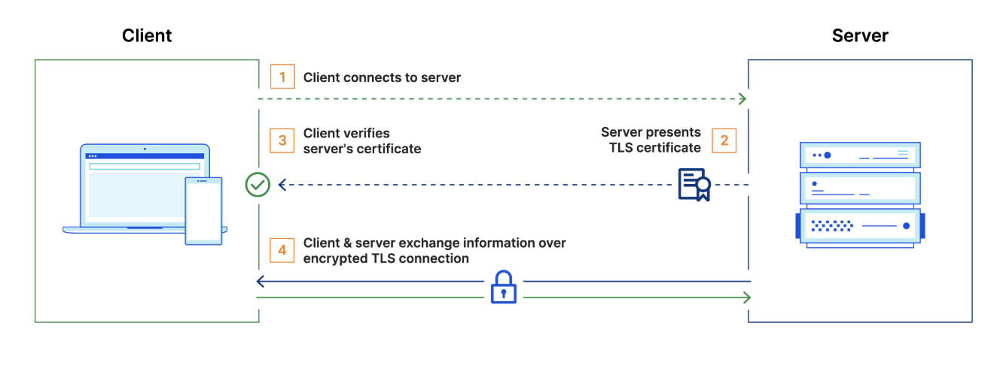

Last week at work we had (yet another) TLS-related incident. Services owned by my team have to interact with a multitude of 3rd party providers via HTTP, each of them requiring mTLS as additional security constraint: as such, most of the times when we see a degradation of service of any sort related to TLS, we're quite confident pointing the finger at certificates we present as clients during TLS handshake. This time it wasn't the case: this time, the issue was caused by our client don't trusting the CA root certificate presented by the server (the 3rd party service).
Before diving into how we troubleshoot this problem, let's refresh our mind on basic TLS concepts.
What is TLS?
Transport Layer Security (TLS) - formerly called SSL - is an encryption protocol used to secure communication between a client and a server, preventing risks like eavesdropping and man-in-the-middle attacks.
TLS utilizes public key cryptography, which involves a pair of keys: a public key and a private key. Data encrypted with the public key can only be decrypted using the corresponding private key.
As a result, when a server successfully decrypts a message encrypted with its public key, it verifies that it holds the associated private key. The public key is accessible to anyone through the server’s or domain’s TLS certificate. A TLS certificate is a data file that contains important information for verifying a server's or device's identity, including the public key, a statement of who issued the certificate (TLS certificates are issued by a certificate authority), and the certificate's expiration date.
The TLS handshake is the process for verifying the TLS certificate and the server's possession of the private key. The TLS handshake also establishes how encryption will take place once the handshake is finished.

For what concerns this article, we're mainly interested into point 3, where client verifies server's certificate: one of the checks done is to verify if it can trust the CA (Certificate Authority) which issued and signed the TLS certificate.
Every OS keeps a list of globally trusted CAs: for Linux, this list is usually kept into a ca-certificates file, available at /etc/ssl/certs/ca-certificates.crt path.
Finding the issue
Now that we revisited some general concepts around TLS, let's get back to our original issue: we have an alert triggered in production, our logs point at a TLS handshake error while trying to connect to a 3rd party provider, now what?
First of all, we need to understand if the issue is related to server's certificate or client's certificate. As a first step, we can try to reproduce it locally. To do that, we can rely on the following openssl command:
openssl s_client -connect <external_server_endpoint> -cert <client_public_certificate> -key <client_private_key>
As we can see, we're trying to connect to the 3rd party provider endpoint indicating which certificate and private key to use for mTLS using -cert and -key parameters.
To our surprise, we managed to connect successfully to the server:
...
CONNECTED(00000005)
...
SSL handshake has read 10625 bytes and written 2325 bytes
Verification: OK
...
This tells us a few things:
- if the issue has to do with certificates, it cannot be the client certificate used for mTLS, otherwise it would've failed also locally
- either something is different between our local machine and the environment where our production code is running, or something more subtle is happening here (for instance, the server does not support the TLS protocol version used by the client)
Let's keep it simple for now and keep looking into certificates: if they're not the problem, we can exclude them from the equation and start looking into more subtle scenarios like the one mentioned above on the supported TLS protocol versions.
To verify if something is up with server certificate, we need to verify the validity of its chian: usually this is composed by the root CA certificate, possibly one or more so called intermediate certificates, and the leaf certificate (the server certificate). To get the certificate chain, we can reuse the same openssl command we used before, adding the -showcerts parameter:
openssl s_client -showcerts -connect <external_server_endpoint> -cert <client_public_certificate> -key <client_private_key>
This will output the server certificates chain, from which we can take the Root CA (this is the one we're interested in, because this is the one we need to trust in order to trust the leaf certificate).
In our specific case, the Root CA belonged to CN=SSL.com TLS RSA Root CA 2022
I was able to find this Root CA certificate in my OS certificate chain, so this confirmed why I was able to connect locally. But what if the same Root CA isn't trusted in our production environment? How could we verify that?
Our production code runs into Docker container whose images are based on Debian Bookworm distroless images: if you're not familiar with distroless images, they do not include package managers, shells, or other unnecessary utilities—only the essential runtime libraries and dependencies required for an application to run. The main advantages are that they increase security and the footprint is minimal. The disadvantage of course is that it makes it harder to troubleshoot issues like this one: for instance, we won't be able to docker exec into the container and try to run the same openssl command we used locally, because we won't have access to a shell, openssl won't be available and we won't have a package manager to install it.
The simpler and quicker option we have here is to inspect the ca-certificates file shipped with our Docker image, and check if the root CA is trusted or not. This is where the docker create command comes in handy: this command creates a new container from the specified image, without starting it. When creating a container, the Docker daemon creates a writeable container layer over the specified image and prepares it for running the specified command.
docker create --name debian <docker_distroless_image>
After we did that, we can use the docker cp command to copy locally the ca-certificates file from the created container above, to further inspect it:
docker cp debian:/etc/ssl/certs/ca-certificates.crt ca-certificates.crt
At this point, we can use a bit of awk magic to list all the root CA trusted in the ca-certificates, and grep to look for the root CA we're interested in:
awk -v cmd='openssl x509 -noout -subject' '/BEGIN/{close(cmd)};{print | cmd}' < ca-certificates.crt | grep "TLS RSA Root CA 2022"
Bingo! We didn't find anything, so it means this specific Root CA is not trusted in our Docker image, and that's why our application is not able to connect successfully to the 3rd party provider server!
Solving the problem (and test it)
So we identified the issue, and the solution sounds pretty trivial: we can add the missing root CA certificate to the ca-certificates file and build a new Docker image. To make sure the new image contains the right and updated ca-certificates file, we can follow the same steps as before:
- create a new docker container with
docker createcommand - copy locally the
ca-certificatesfile withdocker cpcommand - inspect the file with
awk. This time, ourgrepcommand should find the root CA:
awk -v cmd='openssl x509 -noout -subject' '/BEGIN/{close(cmd)};{print | cmd}' < ca-certificates.crt | grep "TLS RSA Root CA 2022"
...
> subject=C=US, O=SSL Corporation, CN=SSL.com TLS RSA Root CA 2022
This should be enough, but what if we would like to be extra cautious before rolling out to production, and make sure we can connect to the server from the new Docker image? What if we would like to do the same openssl test we did locally?
As we said before, we can't do it directly in our Docker image as it's distroless, but this is where Docker multi-stage builds can save the day!
From Docker official documentation:
With multi-stage builds, you use multiple FROM statements in your Dockerfile. Each FROM instruction can use a different base, and each of them begins a new stage of the build. You can selectively copy artifacts from one stage to another, leaving behind everything you don't want in the final image.
How can we leverage multi-stage builds in our use case? We could start from our Docker image, take the ca-certificates file and copy it in a standard Debian image, where we can then have access to a shell, use a package-manager to install openssl and so on.
The Dockerfile will look like this:
FROM <distroless_image> AS certificates
FROM debian:bookworm-slim
COPY --from=certificates /etc/ssl/certs/ca-certificates.crt /etc/ssl/certs/ca-certificates.crt
# install openssl
RUN apt-get update && apt-get -y install openssl
# Copy private key and public cert required for mTLS
COPY <private_key> <private_key>
COPY <public_cert> <public_cert>
ENTRYPOINT ["bash"]
Now, we can build the Docker image and run it:
docker build --tag test_tls . && docker run -it test_tls:latest
At this point we should be attached to the shell of our Docker container, from which we should be able to run the same openssl command as before, and verify we can connect successfully:
root@2ccf9a77c85d:/# openssl s_client -showcerts -connect <external_server_endpoint> -cert <client_public_certificate> -key <client_private_key>
...
CONNECTED(00000005)
...
SSL handshake has read 10625 bytes and written 2325 bytes
Verification: OK
...
For the sake of testing, we could also build the same Docker image starting from the old distroless image (the one where the root CA was not trusted), and execute the same command. This time, the openssl command should print a few errors as expected:
root@2ccf9a77c85d:/# openssl s_client -showcerts -connect <external_server_endpoint> -cert <client_public_certificate> -key <client_private_key>
...
verify error:num=19:self-signed certificate in certificate chain
...
Verify return code: 19 (self-signed certificate in certificate chain)
...
With this final test, I would say we're more than confident our solution works as expected, so it's ready to be rolled out to Production and fix our issue! As we saw, even in use cases where our hands are tied (for good reasons, like enhancing security of our production code), Docker still provides quite a powerful Swiss Army Knife to play around with.
I hope you'll find those tips and tricks useful next time you'll need to trubleshoot TLS errors!